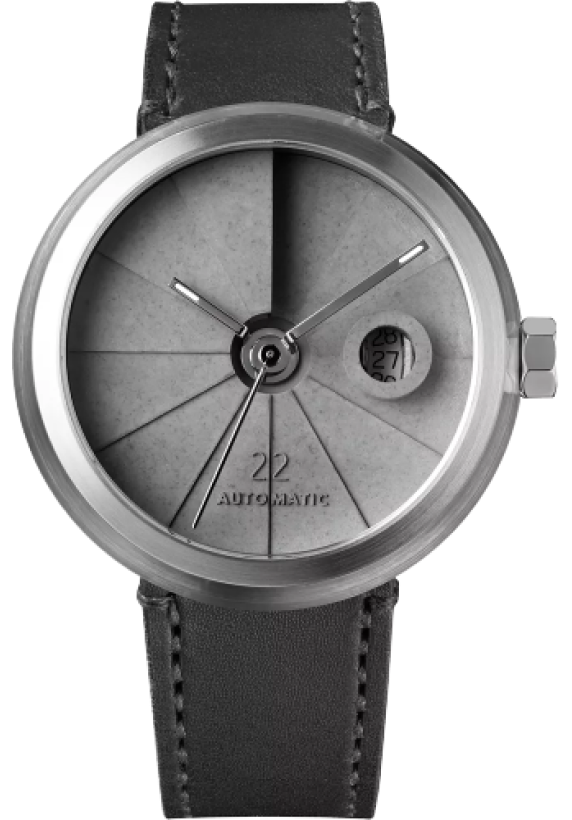

popular
Models

Son22
The watch also features a tough and
durable sapphire crystal glass and comes
with a Swiss SW200-1 automatic winding
movement that has a power reserve.
mor705
Watch
The watch also features a tough and durable
sapphire a Swiss Sellita SW200-1 automatic
winding movement that has a power reserve

popular
Models
Son22
The watch also features a tough and
durable sapphire crystal glass and comes
with a Swiss SW200-1 automatic winding
movement that has a power reserve.

Sw12
The watch also features a tough and
durable sapphire crystal glass and
comes with a Sw12-1 automatic winding
Product description
Inspired by the WWI trench watch, this timepiece has
a contemporary design with an urban style and a
vintage soul. The 22 Design Studio Concrete Sector
Watch reinterprets the old timepiece with a concrete
dial. Handmade in Taiwan, the dial is cast in one
piece using the béton technique more detailed